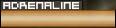

| This is the new 1.5 hud.
If you played any versions before this you'll notice
that everything is basically the same as before, just
visually different and a few new things have been added. |
|
|
| Pretty simple, this shows the
health you have left. It will turn red if your health is
getting low. If your health icon is on fire, it means
you're on fire. |
|
|
Also simple, depending on the
armor class you chose, this is the armor you have left.
None: 0
:Light: 25
Medium: 50
Heavy: 100 |
|
|
| Any kills and capping points
will show here, the same score you'd see if you held
tab. |
|
|
| Adrenaline will go down if
you jump, flip, wall jump or dash. While it's low,
you won't be able to perform stunts well. It recharges
over time. |
 |
|
| This visually shows what
armor you chose, the armor meter will go down if you're
shot, no matter what, this will show which armor you
chose. It also flashes red when you're being hurt. |
|
|
| This shows which team you're
on, if you have Alzheimers and forget. |
|
|
| With akimbo guns, you have
the ability to switch from akimbo, to weapon 1 and 2,
this shows which gun you're on with text. Also
changes for other guns that can switch modes. |
 |
|
| This is the power meter.
It is used for such things as the UP-KO anti-grav,
flashlight and the USA shield system. Once the
meter runs out the perk/item will stop working until it
powers up again. This meter runs out pretty
quickly, so use it wisely. |
|
|
| How much time is left for the
round, watch this because the time may go down
drastically after certain objectives are finished. |
|
|
| This is the overheating bar (used
with guns like the plasma cannon, chaingun, and
flamethrower). If you fire your weapon continually
for too long your gun will either stop working or
explode. |
|
|
| In Desert Crisis you are not
shown how many bullets you have left. Rather you
are given how many clips (unless you are using the
chaingun, shotgun and flamethrower). If the clip
meter is white then you still have bullets left, if its
red, you must reload. Some weapons use a charge meter
instead. |
|
|
| Some objectives need to be
"used". If so, you will get a meter that
looks like this and text telling you what objective you
are completing. The bar and percentage meter
show your progress on the capture, once it's done, text
will flash on screen to show the objective was
completed. |
|
|
| At the bottom right corner of
every map has an objective list. While capping,
the objective menu on the lower right side of the screen
will flash with the objective you are capturing.
The flash will be red if its the UP-KO and blue if its
the USA. Once an objective is captured
depending on which team captures/completes it, it will
turn blue or red. |
|
|
| Right under your objective
list, this tell you where you are in the map. |
|
|